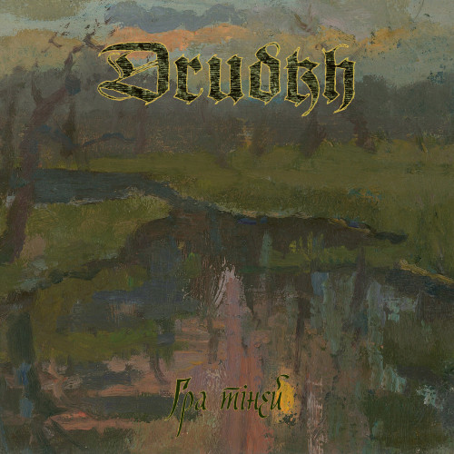
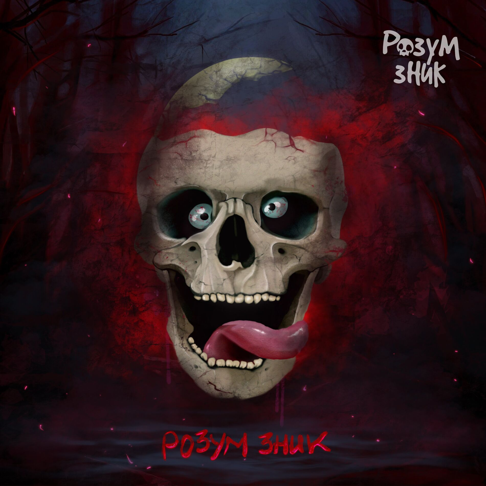

Слов'янський фолк
Український фольк-метал — це поєднання народної музики, міфів та етнічних мотивів із сучасним металом. Тут звучать цимбали, дримби, сопілки — поруч із гітарними рифами та барабанами. Гурти знаходять нові способи осмислити культурну спадщину в музиці.


🎬 Перегляд відео
🆕 Новинки

Drudkh – Гра тіней (2025)

Розум Зник – Червоні метелики (2025)